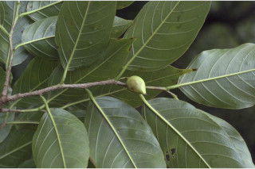
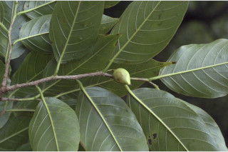

Buttressed trees, up to 30 m tall.
30 ಮೀ. ಎತ್ತರದವರೆಗಿನ ಆನಿಕೆಯುಳ್ಳ ಮರಗಳು.
Buttressed trees, up to 30 m tall.
மரங்கள், தாங்கு வேர்களுடையவை (பட்ரஸ்டு), 30 மீ. உயரம் வரை வளரக்கூடியது.
Bark brown, exfoliating in to rectangular flakes; blaze reddish.
ತೊಗಟೆ ಕಂದು ಬಣ್ಣದಲ್ಲಿದ್ದು ,ಆಯತಾಕಾರದ ರೀತಿಯಲ್ಲಿ ಪದರ ಕಳಚುವ ಚಕ್ಕೆ ರೂಪದಲ್ಲಿರುತ್ತವೆ;ಕಚ್ಚು ಮಾಡಿದ ಜಾಗ ಕೆಂಪು ಛಾಯೆಯಲ್ಲಿರುತ್ತದೆ.
Bark brown, exfoliating in to rectangular flakes; blaze reddish.
மரத்தின் பட்டை ப்ரவுன் நிறமானது, நீள்சதுர வடிவான பெரிய செதில்களாக உரியக்கூடியது; உள்பட்டை சிவப்பு நிறமானது.
Branchlets subterete, appresedly minute pubescent when young, later glabrous.
ಕಿರುಕೊಂಬೆಗಳು ಉಪದುಂಡಾಗಿದ್ದು, ಎಳೆಯದಾಗಿದ್ದಾಗ ಸೂಕ್ಷ್ಮವಾದ ಅಪ್ಪು ಮೃದುತುಪ್ಪಳದಿಂದ ಕೂಡಿರುತ್ತವೆ ನಂತರ ರೋಮರಹಿತವಾಗಿರುತ್ತವೆ.
Branchlets subterete, appresedly minute pubescent when young, later glabrous.
சிறியநுனிக்கிளைகள் குறுக்குவெட்டுத் தோற்றத்தில் கிட்டதட்ட வளையமானது, இளம்பருவத்தில் நுண்ணிய உரோமங்களுடையது, முதிரும் போது உரோமங்களற்றது.
Leaves simple, alternate, distichous; petiole 0.6-1.2 cm long, canaliculate above, glabrous; lamina 10-17.5 x 3-7 cm, ovate - oblong or elliptic-lanceolate, apex cuspidate to caudate - acuminate, base rounded to sltightly attenuate, margin entire (serrate towards apex in saplings), coriaceous, dark green and shining above; midrib slightly canaliculate above; secondary_nerves 8-14 pairs, ascendingly curved; tertiary_nerves reticulo-percurrent.
ಎಲೆಗಳು ಸರಳವಾಗಿದ್ದು ಪರ್ಯಾಯ ಕಾಂಡದ ಎರಡೂ ಕಡೆ ಎದುರು ಬದರಿನ ಲಂಬ ಸಾಲಿನಲ್ಲಿರುತ್ತವೆ; ತೊಟ್ಟುಗಳು 0.6-1.2 ಸೆಂ.ಮೀ. ಉದ್ದವಿದ್ದು, ಮೇಲ್ಭಾಗದಲ್ಲಿ ಕಾಲುವೆಗೆರೆ ಸಮೇತವಿರುತ್ತವೆ,ರೋಮರಹಿತವಾಗಿರುತ್ತವೆ;ಪತ್ರಗಳು 10 – 17.5 X3-7 ಸೆಂ.ಮೀ. ಗಾತ್ರ, ಅಂಡ - ಚತುರಸ್ರ ಅಥವಾ ಅಂಡವೃತ್ತ-ಭರ್ಜಿಯ ಆಕಾರ ಹೊಂದಿದ್ದು,ಶೃಂಗಾಗ್ರ ಮಾದರಿಯಿಂದ ಬಾಲರೂಪಿ - ಕ್ರಮೇಣ ಚೂಪಾಗುವ ತುದಿ, ದುಂಡಾಗಿರುವುದರಿಂದ ಸ್ವಲ್ಪಮಟ್ಟಿಗೆ ಒಳಬಾಗಿದ ರೀತಿಯವರೆಗಿನ ಬುಡ,ನಯವಾದ ಅಂಚು(ಸಸಿಗಳಲ್ಲಿ ಅಗ್ರದ ಬಳಿ ಹೋದಂತೆ ಗರಗಸ ದಂತಿತವಾಗುತ್ತವೆ),ತೊಗಲನ್ನೋಲುವ ಮೇಲ್ಮೈ ಹೊಂದಿದ್ದು,ಪತ್ರಗಳ ಮೇಲ್ಭಾಗ ಕಡುಹಸಿರು ಮತ್ತು ಹೊಳಪನ್ನು ಹೊಂದಿರುತ್ತವೆ;ಮಧ್ಯನಾಳ ಪತ್ರದ ಮೇಲ್ಭಾಗದಲ್ಲಿ ಸ್ವಲ್ಪಮಟ್ಟಿಗೆ ಕಾಲುವೆಗೆರೆ ಸಮೇತವಿರುತ್ತದೆ;ಎರಡನೇ ದರ್ಜೆಯ ನಾಳಗಳು 8 - 14 ಜೋಡಿಗಳಿರುತ್ತವೆ,ಆರೋಹಣ ಮಾದರಿಯಲ್ಲಿ ಬಾಗಿರುತ್ತವೆ; ಮೂರನೇ ದರ್ಜೆಯ ನಾಳಗಳು ವಿಶಾಲ ಜಾಲಬಂಧ ನಾಳ ವಿನ್ಯಾಸದವುಗಳಾಗಿದ್ದು ಎಲೆಯ ದಿಂಡಿಗೆ ಅಡ್ಡವಾಗಿ ಕೂಡುವ ಮಾದರಿಯಲ್ಲಿರುತ್ತವೆ.
Leaves simple, alternate, distichous; petiole 0.6-1.2 cm long, canaliculate above, glabrous; lamina 10-17.5 x 3-7 cm, ovate - oblong or elliptic-lanceolate, apex cuspidate to caudate - acuminate, base rounded to sltightly attenuate, margin entire (serrate towards apex in saplings), coriaceous, dark green and shining above; midrib slightly canaliculate above; secondary_nerves 8-14 pairs, ascendingly curved; tertiary_nerves reticulo-percurrent.
இலைகள் தனித்தவை, மாற்றுஅடுக்கமானவை, இருநெடுக்கு வரிசையிலையடுக்கம் (டைஸ்டிக்கஸ்); இலைக்காம்பு 0.6-1.2 செ.மீ. நீளமானது, குறுக்குவெட்டுத் தோற்றத்தில் கேனாலிகுலேட், உரோமங்களற்றது; இலை அலகு 10-17.5 X 3-7 செ.மீ., முட்டை-நீள்சதுர வடிவானது அல்லது நீள்வட்டம்-ஈட்டி வடிவானது, அலகின் நுனி குட்டையான குறுகிய கூர்மையான முனையுடையது (கஸ்பிடேட்) முதல் வால்-அதிக்கூரியது, அலகின் தளம் வட்டமானது முதல் சிறிது அட்டனுவேட், அலகின் விளிம்பு முழுமையானது (இளம்பருவத்தில் அலகின் நுனிப்பகுதியில் ரம்ப பற்களுடையது), கோரியேசியஸ், கரும்பச்சை நிறமானது மற்றும் அலகின் மேற்பரப்பு பளபளப்பானது; மையநரம்பு மேற்புறத்தில் அலகின் பரப்பைவிட சிறிது பள்ளமானது; இரண்டாம் நிலை நரம்புகள் 8-14 ஜோடிகள், நுனி நோக்கி வளைந்தவை; மூன்றாம் நிலை நரம்புகள் வலைப்பின்னல்-பெர்க்கரண்ட் போன்றவை.
Flowers unisexual, subsessile; male flowers in axillary cymes; female flowers solitary.
ಹೂಗಳು ಏಕಲಿಂಗಿಗಳಾಗಿದ್ದು ಉಪತೊಟ್ಟುಗಳ ಸಮೇತವಿರುತ್ತವೆ;ಗಂಡು ಹೂಗಳು ಅಕ್ಷಾಕಂಕುಳಿನಲ್ಲಿನ ಮಧ್ಯಾರಂಭಿ ಮಂಜರಿಯಲ್ಲಿರುತ್ತವೆ ;ಹೆಣ್ಣು ಹೂಗಳು ಒಂಟಿಯಾಗಿರುತ್ತವೆ.
Flowers unisexual, subsessile; male flowers in axillary cymes; female flowers solitary.
மலர்கள் ஓர் பாலானவை, காம்பற்றது அல்லது மிகச்சிறிய காம்புடையது; ஆண் மலர்கள் இலைக்கோணங்களில் காணப்படுபவை, சைம் வகை மஞ்சரி; பெண் மலர்கள் தனித்தவை.
Drupe, ovoid, beaked, glabrous; seed one.
ಡ್ರೂಪ್ಗಳು ಅಂಡಾಕಾರದಲ್ಲಿ ಇರುತ್ತವೆ, ಕೊಕ್ಕಿನ ಸಮೇತವಿದ್ದು ರೋಮರಹಿತ ವಾಗಿರುತ್ತವೆ ; ಬೀಜಗಳ ಸಂಖ್ಯೆ 1.
Drupe, ovoid, beaked, glabrous; seed one.
உள்ளோட்டுத்தசைகனி (ட்ரூப்), முட்டை வடிவானது, நீட்சியுடையது, உரோமங்களற்றது; ஒர் விதையுடையது.


 
